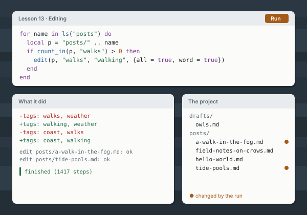

Shale
A language for agents, built by agents.
Shale is for the everyday work on a project's files: finding things, reading them, renaming across a tree, editing in place, and writing up what it found.
- Common file work, built in. Walk a folder,
grepit, rename a word across every file, edit with a diff printed for each change. - Every run has a budget. Steps, files read, bytes, changes. A loop that never ends is stopped, and the run says where.
- Mistakes stop loudly. A missing file is an error, never an empty string, and every stop names its line.
Start the tutorial
Fifteen short lessons. It runs in your browser; there is nothing to install.
